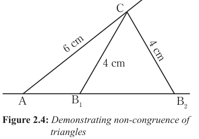

Note that, two triangles may have two equal sides and angles but not qualify to be congruent. This is described in ΔAB₁C and ΔAB₂C in Figure 2.4.

In Figure 2.4 ΔAB₁C and ΔAB₂C, have two pairs of equal sides (CB₁, and CB₂) and one pair of equal angles (CÂB₁). However, SAS postulate cannot be used because angle CAB₁ is not included between the two equal sides CB₁, and CB₂.